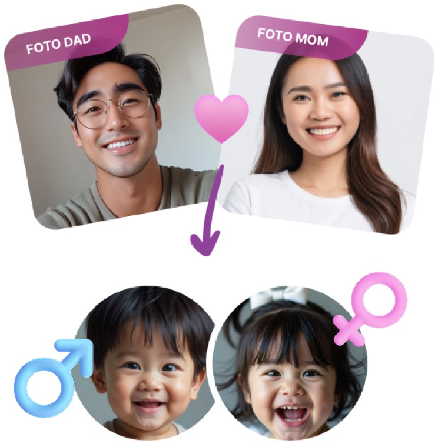

Interactive ToolBaby Generator, Prediksi Wajah Buah Hati!
My contribution: Optimized the page by adding context to make the tool more useful and easier to understand.
View Live Page ↗PRENAGEN · Kalbe · Maternal Nutrition
share of AI Overview opportunities where PRENAGEN appears, Oct 2025 → Jan 2026
Snapshot
Clicks declining as AI Overviews answered searches directly on the results page.
Schema overhaul, a monthly content engine, and AI-search (GEO/AEO) optimization.
AI Overview presence up from 36% to 77% of opportunities.
PRENAGEN generated 41M+ monthly impressions across pregnancy and parenting searches, but organic clicks declined as AI Overviews began answering more queries directly in search results.
A technical audit also found that much of the site's evergreen medical content was still using NewsArticle schema, limiting its visibility in AI search.
A content-led engagement with technical and AI-search workstreams:
Updated structured data, fixed server errors and broken redirects, and improved mobile performance.
Built a monthly SEO content pipeline, refreshed underperforming content, and expanded high-performing topic clusters.
Improved content structure, added structured FAQs, and promoted interactive tools to increase visibility in AI search and encourage users to visit the site.
A few examples of the work.

Interactive ToolMy contribution: Optimized the page by adding context to make the tool more useful and easier to understand.
View Live Page ↗My contribution: Refreshed the content with new sections and related keywords to expand its search visibility.
View Live Article ↗My contribution: Identified keyword opportunities to strengthen PRENAGEN's ownership of pregnancy-related searches.
View Live Article ↗Built a repeatable workflow from keyword research and content briefs to publishing and performance tracking.
Refreshed and edited hundreds of underperforming articles, increasing clicks by 23.4%, impressions by 29.5%, and ranking keywords by 22.3%.
Improved the Baby Generator's visibility, driving +91.35% sessions and +46.07% clicks.
Keywords appearing in Google AI Overviews, Jan – May 2026
Source: monthly performance reports, prenagen.com. 14,380 keywords (Jan 2026) → a record 16,220 (May 2026); the shallow Feb–Mar dip reflects the shorter month and Ramadan seasonality. AI Overview presence rose from 36% of opportunities (Oct 2025) to 77% (Jan 2026).
The roadmap doubles down on trust signals: an editorial-team initiative pairing verified medical credentials with reviewer schema and expert-led layouts, symptom-to-content schema mapping so AI engines recommend PRENAGEN for symptom searches, and closing the visibility gap in conversational AI (Gemini, ChatGPT) to match the ~70% citation rates already won in Perplexity and AI Overviews.